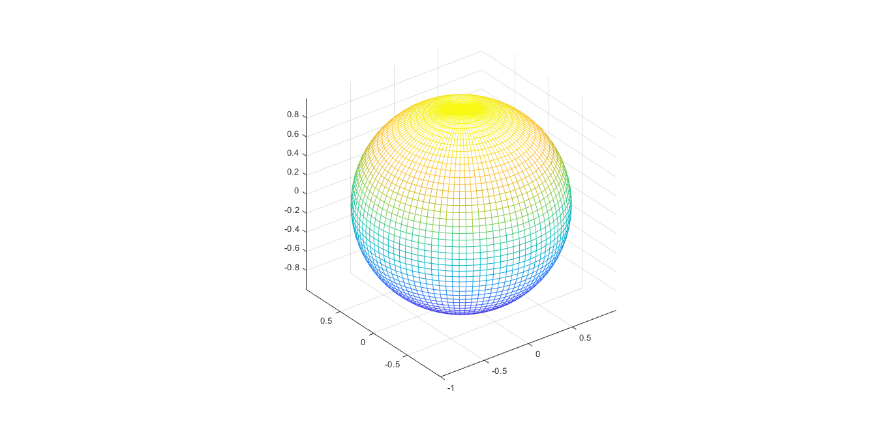
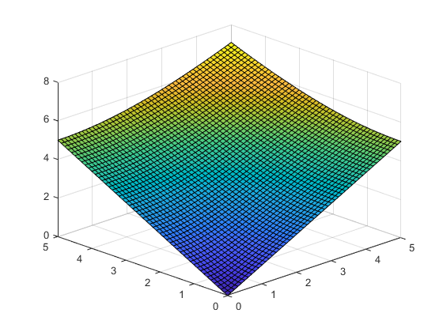
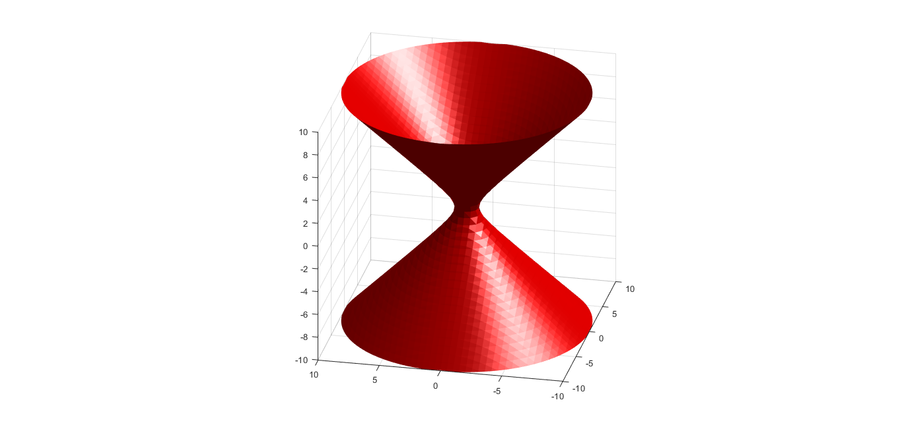

This is a very simple site created to support the topic of double integrals through short explanations and examples. This material is taken from chapter 5 of J.E. Marsden and A.J. Tromba, Vector Calculus 3rd Edition. I hope you like it. For a clearer view of an image you can hover over it, it will expand automatically.
We consider a continuus function of two variables:
`f:R\subset \mathbb{R}^2->R`
which has a domain R as a rectangle with sides that are paralell to the coordinate axes. The R rectangle can be described in terms of the closed intervals: [a,b] and [c,d].
Then we can write:
Were x = a, x = b, y = c and y = d are the borders of a region V in the space.
Were x = a, x = b, z = c and z = d are the borders of a region V in the space.
Were y = a, y = b, z = c and z = d are the borders of a region V in the space.
The volume of the region above R and below the graph for the function f is called the Double Integral of f over R and in the case of z = f(x,y), it is denoted by:
`int_(R)`,`int(R)f(x,y)dA`,
`int_(R)[intf(x,y)dxdy]`
This is a Toroid. it is widely studied in the field of physics.
This is a Sphere. It can also be interesting to study it with triple integrals.
This is a fun figure shaped like a sheet of paper.
This is hyperboloid, it kind of looks like a toy and is very interesting to study.